渠道管理
把 LINE 官方帳號、Facebook 粉專、Instagram 和官網聊天視窗接進系統，設定自動回覆的 Bot，並決定哪些同事看得到哪個渠道的對話。
1 這頁能做什麼
「渠道」就是客戶跟你聯絡的地方：一個 LINE 官方帳號、一個 Facebook 粉專、一個 Instagram 帳號，或官網上的聊天視窗。把渠道接進系統後，客戶的訊息才會進到收件匣，Bot 才能自動回覆。這頁在側欄「分析與管理 > 設定 > 渠道管理」。
這頁通常只有管理員會用到。要看到渠道清單需要「檢視渠道」權限；新增、編輯、刪除分別需要「新增渠道」「編輯渠道」「刪除渠道」權限。沒有權限的人按下按鈕會跳出錯誤。
2 看懂渠道卡片
每張卡片是一個渠道。左邊是類型標籤和名稱，右邊是狀態與操作按鈕。
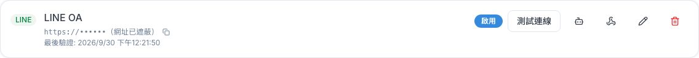
| 卡片上的東西 | 意思 |
|---|---|
| 網址與複製圖示 | 這個渠道的 Webhook 網址，要貼到 LINE 或 Meta 後台，讓訊息送進系統 |
| 最後驗證 | 上次按「測試連線」成功的時間。系統背景的權杖檢查不會改這個時間 |
| 粉專 ID／IG 帳號 ID | Facebook、Instagram 渠道才有，按「測試連線」後系統自動取得 |
| 啟用／停用標籤 | 渠道目前有沒有在收訊息 |
| 「停用」／「啟用」按鈕 | 暫時讓渠道下架或重新上線。停用後不再收發訊息，歷史對話會保留，見第 11 節 |
| 「測試連線」 | 用目前的金鑰向 LINE 或 Meta 確認還能用。成功出現綠色勾勾，失敗會在名稱下方顯示紅字原因 |
| 機器人圖示 | 「Bot 設定」，見第 8 節 |
| 分岔箭頭圖示 | 「下游 Webhook 轉發」，工程師串接其他系統用，見第 11 節 |
| 鉛筆圖示 | 編輯渠道（畫面提示寫「按編輯」時就是指它） |
| 紅色垃圾桶 | 刪除渠道，見第 11 節 |
1. LINE 的測試連線只檢查 Channel Access Token。就算 Channel Secret 填錯也會顯示成功，但之後會收不到訊息，所以貼 Secret 時要特別仔細。
2. 官網聊天（WebChat）渠道不需要測試連線，按了一定會顯示失敗，不用理會。
3 新增渠道的三種方式
頁面右上角有三個按鈕，挑一個適合你的：
| 按鈕 | 適合 | 特色 |
|---|---|---|
| 「設定精靈」（推薦） | 第一次接 LINE、Facebook、Instagram 或官網聊天 | 分 4 步帶你填，建立後自動測試連線；LINE 會自動幫你把 Webhook 設好，FB／IG 會直接給你要貼到 Meta 的網址與驗證權杖 |
| 「新增渠道」 | 熟悉流程、只想快速填完 | 一個視窗填完；LINE、Facebook 有「欄位說明」告訴你去哪裡拿 |
| 「用 Facebook 連結粉專」 | 接 Facebook 粉專最簡單的方式 | 用 Facebook 帳號登入、勾選粉專就完成，不用自己準備應用程式和金鑰。只有平台有開放這個功能時才會出現 |
用設定精靈
- 按「設定精靈」。
- 步驟 1：選「渠道類型」，填「顯示名稱」（例如「門市 LINE 官方帳號」），按「下一步」。
- 步驟 2：貼上金鑰（各渠道要填什麼見第 4～7 節），在「誰看得到這個渠道」勾選同事（見第 9 節），按「建立並驗證」。
- 步驟 3：系統自動建立並測試連線，稍等幾秒。
- 步驟 4：看結果。LINE 會顯示 Webhook 已自動設定；Facebook、Instagram 會顯示「回呼網址」和「驗證權杖」，照著貼到 Meta 後台；官網聊天會直接給你嵌入碼。按「完成」。
用「新增渠道」
- 按「新增渠道」，選「渠道類型」，填「顯示名稱」。
- 依渠道類型填金鑰。不知道去哪拿，按「欄位說明：這些值要去哪裡取得？」（LINE、Facebook 才有）。
- 在「誰看得到這個渠道」勾選同事。
- 按「儲存」。視窗關閉、列表多一張卡片就是成功了（不會跳成功訊息）。
- LINE：記得到 LINE 後台設定 Webhook（第 4 節）。Facebook、Instagram：按卡片上的「測試連線」，再到 Meta 後台設定 Webhook（第 5、6 節）。
4 串接 LINE
LINE 官方帳號要填兩組金鑰，都在 LINE Developers Console（developers.line.biz/console）你的 Messaging API channel 裡。
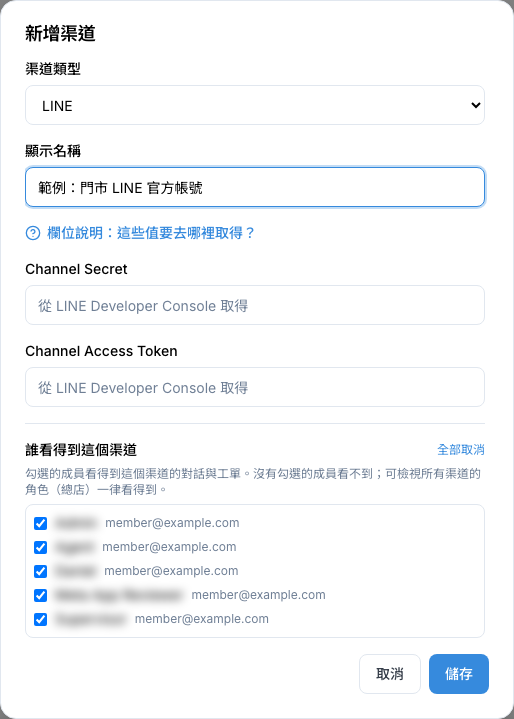
| 要填的欄位 | 去哪裡拿 |
|---|---|
| Channel Secret | LINE Developers Console → 選你的 channel →「Basic settings」分頁 → 往下找「Channel secret」，按複製圖示 |
| Channel Access Token | 同一個 channel →「Messaging API」分頁 → 拉到最下面「Channel access token (long-lived)」，按複製圖示。如果是空的，按「Issue」產生一組 |
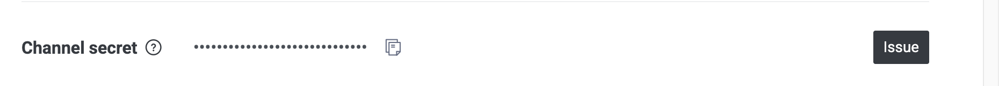
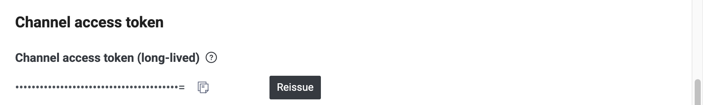
設定 Webhook（讓訊息送進系統）
用設定精靈建立的話，系統會自動幫你設好，可以跳過。用「新增渠道」建立的話，要自己做：
- 回到渠道管理，按 LINE 卡片網址旁的複製圖示，複製 Webhook 網址。
- 到 LINE Developers Console 的「Messaging API」分頁，找到「Webhook settings」，在「Webhook URL」貼上，按「Update」。
- 把「Use webhook」打開。
建議到 LINE Official Account Manager 把 LINE 內建的「自動回應訊息」關掉，避免和系統的 Bot 同時回覆客戶。
5 串接 Facebook
方法一：用 Facebook 連結粉專（推薦）
不用自己準備應用程式和金鑰，也不用設定 Webhook。
- 按右上角「用 Facebook 連結粉專」，會跳到 Facebook 登入授權。請用管理這個粉專的 Facebook 帳號登入，並勾選要連結的粉專。
- 授權完會回到渠道管理，自動跳出「選擇要連結的粉專」。
- 勾選粉專，按「連結所選粉專」。每列顯示「已連結」就成功了，按「完成」。
方法二：自備 Meta 應用程式
公司已經有自己的 Meta 應用程式時用這個方法。三個欄位都在 Meta for Developers（developers.facebook.com/apps）你的應用程式裡。
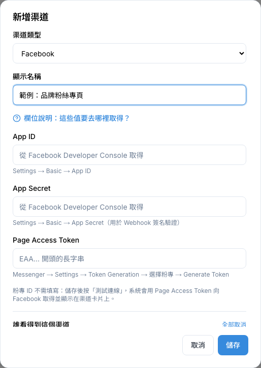
| 要填的欄位 | 去哪裡拿 |
|---|---|
| App ID | 應用程式左側「應用程式設定」→「基本資料」→「應用程式編號」。建議填，系統才能提早提醒你權杖快到期 |
| App Secret | 同一頁「應用程式密鑰」，按「顯示」、輸入密碼後複製。用來確認訊息真的是 Facebook 送來的 |
| Page Access Token | 左側「使用案例」→「透過 Messenger from Meta 與顧客互動」右邊的「自訂」→「Messenger API 設定」→「2. 產生存取權杖」，在你的粉專那列按「產生」，複製 EAA 開頭的長字串 |
| 粉專 ID | 不用填。儲存後按「測試連線」，系統會自動取得並顯示在卡片上 |
- 填好三個欄位，勾選誰看得到，按「儲存」。
- 按這張卡片的「測試連線」，成功後卡片會出現「粉專 ID」。
- 按卡片的鉛筆圖示打開「編輯渠道」，下方「Facebook Webhook 設定提示」有 Webhook 網址和「驗證權杖（Verify Token）」。
- 到 Meta 應用程式的 Messenger Webhooks 設定，「回呼網址」貼 Webhook 網址，「驗證權杖」貼 Verify Token，訂閱
messages和messaging_postbacks。
6 串接 Instagram
接的是 Instagram 專業帳號的私訊。渠道類型選「Instagram (私訊)」，三個欄位都在 Meta 應用程式 →「使用案例」→「Instagram API」→「含有 Instagram 登入的 API 設定」這一頁。
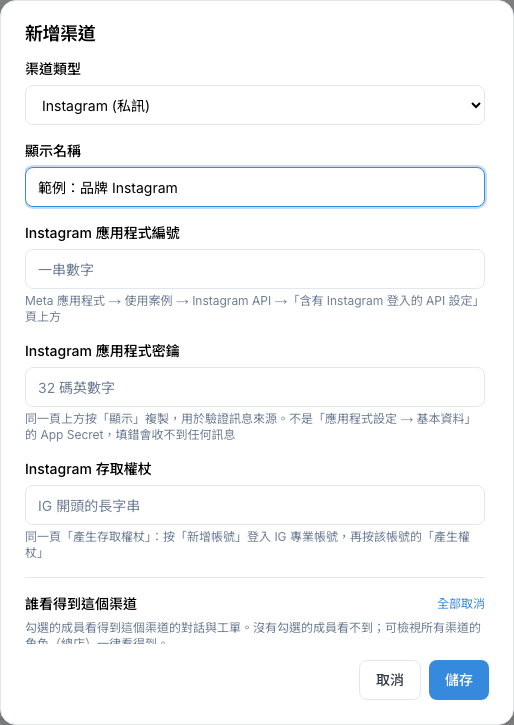
| 要填的欄位 | 去哪裡拿 |
|---|---|
| Instagram 應用程式編號 | 這一頁上方的一串數字 |
| Instagram 應用程式密鑰 | 同一頁上方，按「顯示」後複製 |
| Instagram 存取權杖 | 同一頁「產生存取權杖」：按「新增帳號」登入 IG 專業帳號，再按該帳號的「產生權杖」，複製 IG 開頭的長字串 |
- 填好三個欄位，勾選誰看得到，按「儲存」。
- 按這張卡片的「測試連線」，讓系統取得 IG 帳號 ID。
- 按鉛筆圖示打開「編輯渠道」，下方「Instagram Webhook 設定提示」有 Webhook 網址和驗證權杖。
- 到 Meta 應用程式的 Instagram Webhooks 設定，「回呼網址」貼 Webhook 網址，「驗證權杖」貼 Verify Token，訂閱
messages。
7 官網聊天（WebChat）
在你的官網右下角放一個聊天視窗，客戶的訊息會跟 LINE、FB 一樣進到收件匣。
建立
- 建議用「設定精靈」，渠道類型選「WebChat (網頁聊天)」。WebChat 不需要任何外部金鑰，系統會自動產生，完成後直接給你嵌入碼。
- 如果用「新增渠道」，畫面會要你填「Channel Secret」和「Channel Access Token」，這兩格隨便填一串英文數字就可以（例如
webchat-key-001），它們不會用在別的地方。
放到官網上
- 在 WebChat 卡片按「取得嵌入碼」。
- 按「複製」，把整段程式碼交給網站管理員，請他貼到網頁的
<body>裡。 - 這個視窗沒有關閉按鈕，按鍵盤 Esc 關掉。
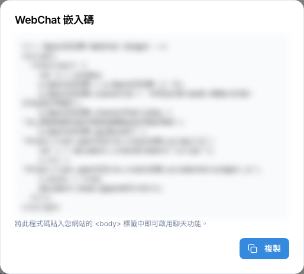
其他功能
| 在哪裡 | 做什麼 |
|---|---|
| 卡片上的「預覽」 | 在這個頁面右下角先試開聊天視窗，看看長什麼樣子，再按「關閉預覽」收起來 |
| 卡片上的「背景」 | 換聊天頁的背景圖：選「尺寸」（Cover 填滿、Contain 完整顯示）、「位置」（一般用 center），再「上傳背景圖片」（png、jpeg、webp），按「儲存」 |
| 頁面上方「WebChat 網頁版連結」 | 不用放到官網也能聊的獨立聊天頁。按「複製連結」，可以貼在 Email、社群貼文或做成 QR Code |
8 Bot 設定
每個渠道都可以設定客戶來訊時，要先由 Bot 自動回覆，還是直接交給真人客服。按卡片上的機器人圖示打開「Bot 設定」。
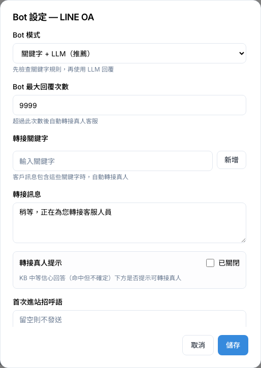
| 欄位 | 說明 |
|---|---|
| Bot 模式 |
「關鍵字 + LLM（推薦）」：先看有沒有符合的關鍵字回覆，沒有再由 AI 回答。 「僅 LLM 回覆」：所有訊息都由 AI 回答。 「僅關鍵字回覆」：只回符合關鍵字的訊息，其他留給真人。 「關閉（直接人工）」：Bot 不回，全部交給真人客服。 |
| Bot 最大回覆次數 | Bot 回了這麼多次還沒解決，就自動轉給真人。可填 1～50 |
| 轉接關鍵字 | 客戶訊息裡出現這些字（例如「真人」「客服」），就直接轉給真人。輸入後按「新增」或 Enter，按小 X 刪除 |
| 轉接訊息 | 轉給真人時，自動傳給客戶的話，例如「稍等，正在為您轉接客服人員」 |
| 轉接真人提示 | AI 回答但不太確定時，要不要在回答下面提示客戶「可以轉真人」。打開後可選「提示方式」和「按鈕文字」（最多 20 字） |
| 首次進站招呼語 | 客戶第一次加好友或第一次傳訊息時自動送出，每人每個渠道只送一次。可以放 {{contact.name}} 帶入客戶名字。留空就不送 |
| 非營業時間問候語 | 在營業時間以外收到訊息時的自動回覆。留空會用系統預設的內容。營業時間在「設定 > 營業時間」設定 |
| LIFF App ID（短連結身份收集） | LINE 渠道才需要。填了之後，短連結在 LINE 裡被點擊時能認出是哪位客戶（見「12 · 短連結」）。格式像 1660000000-AbCdEfGh，請找負責 LINE 的工程師或管理員提供 |
- 按卡片上的機器人圖示。
- 調整需要的欄位，視窗可以往下捲。
- 按「儲存」。視窗關閉就是存好了，馬上生效。
9 誰看得到這個渠道
你可以控制每位同事看得到哪些渠道的對話與工單。例如總店看全部，A 分店只看 A 分店的 LINE。規則很簡單：
- 有被勾選的同事才看得到這個渠道的對話與工單。
- 沒被勾選的同事看不到，在收件匣也找不到這些對話。
- 角色有「檢視所有渠道（總店）」權限的人，不管有沒有勾選都看得到全部。
建立渠道時決定
「設定精靈」和「新增渠道」都有「誰看得到這個渠道」清單，預設全部勾選。取消勾選的同事就看不到。你自己就算沒勾，建立後也一定看得到。
之後要改
- 到「設定 > 人員管理」，在要調整的同事那列按「編輯」。
- 在「可使用的渠道」勾選或取消渠道。
- 按「儲存」。
新增同事時，也可以在「看得到哪些渠道」直接勾好。詳細操作見「16 · 人員、角色與權限」。
不過系統目前沒有建立團隊的地方，通常選不到團隊；而且在這個區塊按「新增」或撤銷的 X 會立刻生效，之後按「取消」不會復原。要調整誰看得到，建議照上面的步驟到「人員管理」改。
10 權杖失效與重新連結
Facebook 和 Instagram 的權杖可能因為改密碼、移除管理員、過期等原因失效。失效後這個渠道收不到也回不了訊息。系統每 6 小時檢查一次，發現失效會：
- 在渠道卡片顯示紅框「存取權杖已失效，目前收不到也無法回覆訊息」。
- 用站內通知和 Email 通知管理員，沒修好的話每 3 天再提醒一次。
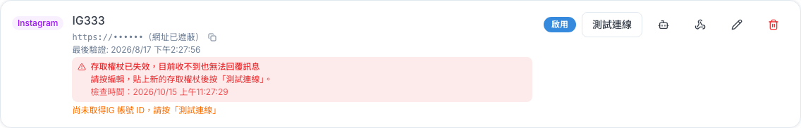
怎麼修
| 這個渠道是怎麼接的 | 修復方式 |
|---|---|
| 用「用 Facebook 連結粉專」接的（卡片寫「透過 Facebook 登入連結」） | 按右上角「用 Facebook 連結粉專」，重新授權，在清單勾選同一個粉專，按「連結所選粉專」。顯示「已重新連結」就好了，原本的對話紀錄都會保留 |
| 自己填金鑰接的 | 到 Meta 後台重新產生權杖（位置見第 5、6 節）→ 回到渠道管理按鉛筆圖示 → 在權杖欄貼上新的值，其他欄位留空 → 按「儲存」→ 再按卡片的「測試連線」，紅框消失就好了 |
卡片上的其他提醒
| 提醒文字 | 意思與處理 |
|---|---|
| 尚未取得粉專 ID（或 IG 帳號 ID），請按「測試連線」 | 按一下「測試連線」就會補上 |
| 收到不屬於此渠道的帳號的訊息，已略過 | 同一個 Meta 應用程式還連了別的粉專，但系統裡沒有那個渠道。需要的話替那個粉專新增渠道 |
| 訊息來自不同的 Meta 應用程式，已略過 | 通常是應用程式密鑰填錯，請檢查並重新貼上 |
11 修改、刪除與進階設定
修改渠道（換名稱、換金鑰）
- 按卡片上的鉛筆圖示，打開「編輯渠道」。
- 要改名字就改「顯示名稱」。要換金鑰就在金鑰欄貼新的值；留空表示不更換。
- 按「儲存」。
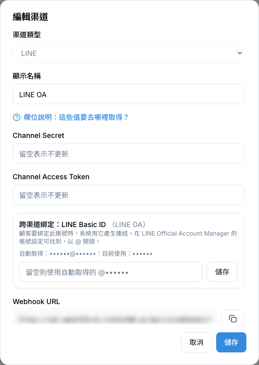
「跨渠道綁定」區塊有自己的「儲存」按鈕，改完要按它，不要在輸入框裡按 Enter（會變成按到下面的「儲存」，綁定的值沒存到）。這個值系統通常會自動取得，一般不用改。
刪除渠道
按紅色垃圾桶、確認後就會永久刪除。只有剛建錯、還沒收過任何對話的渠道才刪得掉。
停用與重新啟用渠道
收過對話的渠道不能刪除，要讓它下架請改用「停用」。停用後這個渠道不再收發訊息，但歷史對話和工單都會保留，之後隨時可以再啟用。
- 在要下架的渠道卡片上按「停用」。
- 確認視窗會說明停用的影響，按「確定」。
- 卡片的標籤變成「停用」。要恢復時，按同一個位置的「啟用」即可，不會再跳確認。
下游 Webhook 轉發（工程師用）
卡片上的分岔箭頭圖示。用來把這個渠道收到的訊息，同時轉一份給公司其他系統。一般使用者不需要設定，請交給工程師。
Webhook 公開網址（一般不用改）
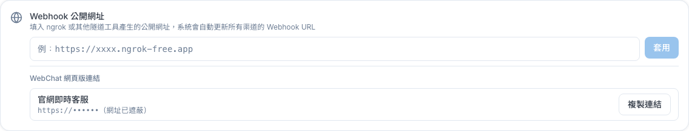
這裡填的是本系統對外的正式網域，系統會依它改寫所有渠道的 Webhook 網址。平常不需要修改，只有公司換網域時才用得到。
- 在「Webhook 公開網址」填入正式網域，必須是
https://開頭，例如https://crm.example.com。 - 按「套用」。
- 確認視窗會寫出這次會改寫幾個渠道的網址，確定沒問題再按「確定」。
- 套用後，到 LINE、Meta 後台確認各渠道的 Webhook 網址已經是新的。